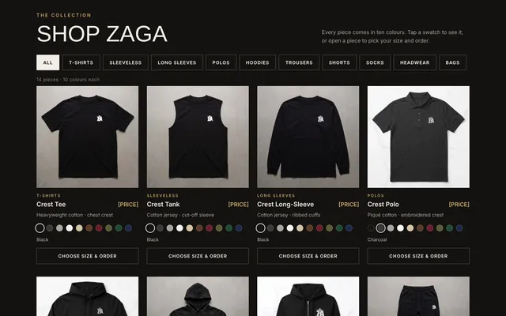
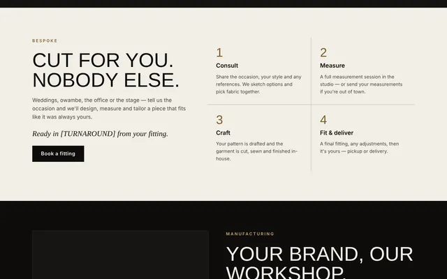

WebsitesUI/UX
Zaga
Wear the crown.
Ready to launch
The website for Zaga, a fashion house that designs, tailors and manufactures clothing: a ready to wear shop, bespoke tailoring and production for other brands. The site is built and waits on the brand's prices, contact details and story before launch.

- Type
- Client brand website and shop
- Built with
- HTML, CSS, JavaScript, Python image tools
- Launch
- After the client adds prices and contact details
- My role
- Design and development
The brief
Zaga does three things: sells its own label, tailors pieces to measure and manufactures for other brands. The site had to present all three clearly and let customers order without a full online checkout.
Features
Shop with ten colours per pieceBuilt
Products across categories from tees and hoodies to headwear and bags, each in ten colours. Tap a swatch to see the piece in that colour.
Quick view and orderingBuilt
Pick a colour and size in a quick view, then order through a ready written WhatsApp message.
Bespoke tailoringBuilt
A four step flow, consult, measure, craft, fit and deliver, with a booking call to action.
Manufacturing for brandsBuilt
Pattern making, sampling, cut and sew, logo printing, labels and tags, team and event uniforms.
Contact formBuilt
Orders, fittings and production quotes in one form.
Launch contentPlanned
Prices, the WhatsApp number, studio address, minimum order and the founder's story are placeholders until the client supplies them.
One photo, ten colours
Only some colours were photographed. A set of Python tools cuts each garment from its background, finds logos and metal hardware, then renders the other colours from the real photo, keeping the folds, knit and monogram. Rendered colours carry a Preview badge so customers know which ones are photographs.
Design direction
Black and gold with large condensed headlines, quiet product photography and a light section for tailoring, so each of the three services has its own room.
Stack
- HTML
- CSS
- JavaScript
- Python
- rembg
- Pillow
Screens
Captured from the finished build. Prices and some contact details are still placeholders until launch.
 Home
Home
Shop
Bespoke tailoring


Status
Built and ready to launch once the client adds prices, contact details and the brand story. There is no public URL yet.